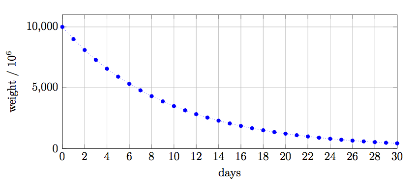
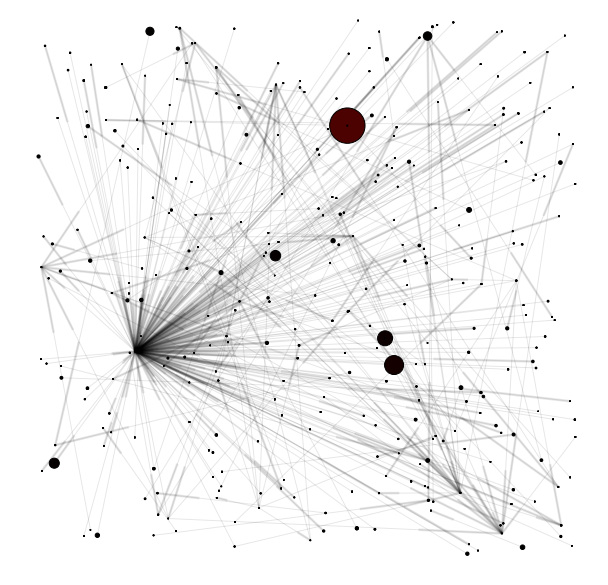

アウトリンク行列
PoIの計算を行うブロック高がhであるとしましょう。 hにおいてバランスシート中に権利確定したXEMが10000以上あるアカウントがPoIの計算に参加することができます。
NEMはそれらのアカウントに対して、以下の条件を満たす全ての送金トランザクションを集めます。
- 最低1000XEMの送金である
- 最後のブロックから43200以内のブロックに含まれる(約30日)
- 受け取り先のアカウントも（7.1節で説明した）PoIに参加する資格を持っている
アカウントAiからAjへ、μXEMを送信したトランザクションをTKとし、これが含まれるブロック高をhijkとすると、以下の等式に基いてトランザクションに重みを付けます。
wijk=amount∗exp(ln(0.9)[1440h−hijk]))
ただし[x]は床関数です。図8: 10000XEMの持つ重みの減少は、重みが最新ブロック高から遠くなるに従って減少していく様子を表しています。
この値は合算され
w~ij=k∑wijk
以下のように場合分けします。
o~ij={w~ji−w~ij0(w~ji−w~ij>0)(otherwise)
最終的に、アウトリンク行列Oの要素oijは以下のようになります。
oij=⎩⎨⎧∑io~ijo~ij0(i∑o~ij>0)(otherwise)
従って、アウトリンク行列の要素oijは、直近約30日にAiからAjへと支払われたXEMの量、ただし負の値場合は0になる重み付き総フロー量(weighted net flow)を表します。これはアカウントの重要度に貢献するのは、支払いを総合したものに限るということを示します。
図8
10000XEMの持つ重みの減少

図9

2015年4月29日におけるNEMのトランザクショングラフ（アウトリンク行列）。ここでは1456のノードが収穫に参加するための条件を満たしている。